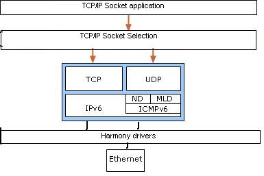
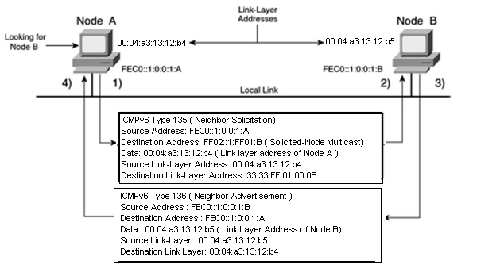

1.2.4.7 NDP Module
The NDP (Neighbor Discovery Protocol) for IP version 6 is used by IPv6 nodes on the same link to discover each other's presence. RFC - 4861.
NDP module is responsible for:
Address Auto configuration of nodes
Discovery of other nodes in the link (It can be a Router Discovery or Neighbor Discovery)
Determining the link-layer_address of other nodes
Duplicate address detection (DAD)
Finding available routers and Domain Name System (DNS) servers
Address Prefix discovery
Parameter Discovery (Such as Link MTU or Hop limit)
Comparing with IPv4:
NDP is a substitute of ARP (Address Resolution protocol ). This new mechanism uses a mix of ICMPv6 and multicast addresses to discover the IPv6 node on same link.
NDP includes Neighbor Unreachability Detection (NUD) , thus improving the robustness of packet delivery.
Unlike IPv4 broadcast addresses, IPv6 address resolution multicasts are spread over 4 billion (2^32) multicast addresses, greatly reducing address resolution-related interrupts on nodes other than the target. Moreover, non-IPv6 machines should not be interrupted at all.
Neighbor Discovery defines five different ICMPv6 packet types.
Five Different ICMPv6 Packet Types:
Router Solicitation - Hosts inquire with Router Solicitation message to locate routers on the attached link
Router Advertisement - Router advertise their presence periodically to all the nodes or in response to the Router Solicitation message
Neighbor Solicitation - Neighbor solicitations are used by nodes to determine the Link Layer address of a neighbor, or to verify that a neighbor is still reachable via a cached Link Layer address
Neighbor Advertisement - Neighbor advertisements are used by nodes to respond to a Neighbor Solicitation message
Redirect - Routers may inform hosts of a better first hop router for a destination
Abstraction Model
This module provides software abstraction of the IPv6 module existent in any TCP/IP Stack implementation. It removes the overhead of address resolution from all other modules in the stack.
Link Layer Neighbor Discovery
Using the address FEC0::1:0:0:1 :A, node A wants to deliver packets to destination node B using the IPv6 address FEC0::1 :0:0:1 :B on the same local link. However, node A does not know node B's link-layer address. Node A sends an ICMPv6 Type
135 message (neighbor solicitation) on the local link using its site-local address FEC0::1:0:0:1:A as the IPv6 source address, the solicited-node multicast address FF02::1 :FF01:B corresponding to the target address FEC0::1 :0:0:1 :B as the destination IPv6 address, and the source link-layer address 00:04:a3:13:12:b4 of the sender, node A, as data of the ICMPv6 message. The source link-layer address of this frame is the link-layer address 00:04:a3:13:12:b4 of node A. The destination link-layer address 33:33:FF:01 :00:0B of this frame uses multicast mapping of the destination IPv6 address FF02::1 :FF01 :B.
Node B, which is listening to the local link for multicast addresses, intercepts the neighbor solicitation message because the destination IPv6 address FF02::1:FF01:B represents the solicited-node multicast address corresponding to its IPv6 address FEC0::1:0:0:1:B.
Node B replies by sending a neighbor advertisement message using its site-local address FEC0::1 :0:0:1 :B as the IPv6 source address and the site-local address FEC0::1 :0:0:1 :A as the destination IPv6 address. It also includes its link-layer address 00:04:a3:13:12:b5 in the ICMPv6 message. After receiving neighbor solicitation and neighbor advertisement messages, node A and node B know each other's link-layer addresses.
Learned link-layer addresses are kept in a neighbor discovery table (neighbor cache). Therefore, the nodes can communicate on the local link. The neighbor solicitation message is also used by nodes to verify the reachability of neighbor nodes in the neighbor discovery table (neighbor cache). However, the unicast addresses of the neighbor nodes are used as destination IPv6 addresses in ICMPv6 messages instead of solicited-node multicast addresses in this situation. It is possible for a node that changes its link-layer address to inform all other neighbor nodes on the local link by sending a neighbor advertisement message using the all-nodes multicast address FF02::1 . The neighbor discovery table of the nodes on the local link is updated with the new link-layer address.
Library Interface
| Name | Description |
|---|---|
| Macros | |
| TCPIP_IPV6_MTU_INCREASE_TIMEOUT | 600 seconds |
| TCPIP_IPV6_NDP_DELAY_FIRST_PROBE_TIME | 5 s |
| TCPIP_IPV6_NDP_MAX_ANYCAST_DELAY_TIME | 1 s |
| TCPIP_IPV6_NDP_MAX_MULTICAST_SOLICIT | 3 transmissions |
| TCPIP_IPV6_NDP_MAX_NEIGHBOR_ADVERTISEMENT | 3 transmissions |
| TCPIP_IPV6_NDP_MAX_RTR_SOLICITATION_DELAY | 1 s |
| TCPIP_IPV6_NDP_MAX_RTR_SOLICITATIONS | 3 transmissions |
| TCPIP_IPV6_NDP_MAX_UNICAST_SOLICIT | 3 transmissions |
| TCPIP_IPV6_NDP_REACHABLE_TIME | 30 s |
| TCPIP_IPV6_NDP_RETRANS_TIMER | 1 s |
| TCPIP_IPV6_NDP_RTR_SOLICITATION_INTERVAL | 4 s |
| TCPIP_IPV6_NDP_TASK_TIMER_RATE | The NDP task rate, milliseconds The default value is 32 milliseconds. The lower the rate (higher the frequency) the higher the module priority and higher module performance can be obtained The value cannot be lower than the TCPIP_STACK_TICK_RATE. |
| TCPIP_IPV6_NDP_VALID_LIFETIME_TWO_HOURS | Sets the lifetime to 2 hours |
| Reachability Functions | |
| TCPIP_NDP_NborReachConfirm | Confirms that a neighbor is reachable |